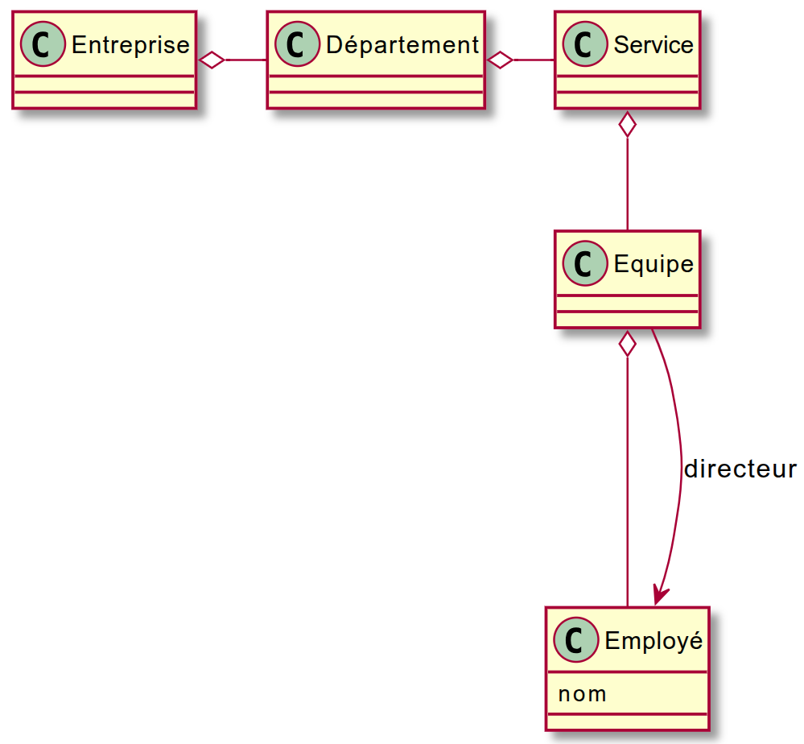
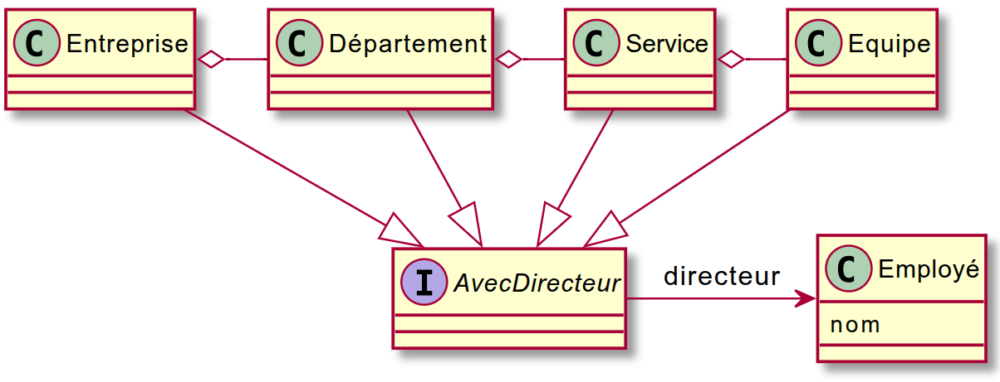

TP 03 : Rappels de conception objet
⬇️ Télécharger le TP (tp03.zip)
Objectif du TP
L’objectif de ce TP est de consolider vos connaissances en programmation orientée objet :
- réduction du couplage entre classes,
- respect de la loi de Déméter,
- et mise en pratique de principes de bonne conception logicielle (interfaces, dépendances inversées, réutilisabilité).
Note
Avant de commencer ce TP, vous devez :
- Créer un nouveau dépôt GitHub nommé
tp03-conception-objet. - Ajouter le compte @rezakaziz comme collaborateur du projet.
- Allez dans
Settings→Collaborators→Add people→ recherchezrezakaziz. - Clonez votre dépôt en local et travaillez dessus pour les exercices suivants.
- Commitez et poussez régulièrement vos modifications (
git add .,git commit -m "progression",git push).
Exercice 1 : Suppression du couplage
Question 1 — Réduire le couplage avec un logger
Un logiciel de calcul enregistre (ou logge) ses étapes pour permettre une vérification ultérieure.
L’implémentation actuelle se trouve dans le package exo1q1v1.
Cependant, la classe FileLogger utilisée rend les tests unitaires difficiles à écrire et à maintenir.
💭 Analyse du problème
- Les exceptions lancées par le logger sont-elles bien gérées dans le code actuel ?
- Pourquoi cette approche rend-elle le logiciel moins flexible ?
💡 Travail demandé
- Dans le package
exo1q1v2, créez une interface pour réduire le couplage. - Fournissez trois implémentations :
NullLogger: ne fait rien (utile pour désactiver les logs)MemoryLogger: stocke les messages dans uneArrayList<String>(utile pour les tests)FileLogger: reprend le comportement initial (écriture dans un fichier)
- Modifiez le code du calcul pour qu’il dépende de l’interface et non plus d’une classe concrète.
- Réfléchissez : qui doit instancier le logger et pourquoi ?
Question 2 — Exportation flexible du catalogue
On dispose d’une classe Catalogue représentant un ensemble de produits.
Dans le package exo1q2v1, cette classe peut exporter son contenu au format XML via une classe XMLDumper.
Cependant, le couplage entre Catalogue et XMLDumper est trop fort :
la classe Catalogue ne devrait pas dépendre d’un format spécifique.
💭 Problème à résoudre
- Pourquoi le fait que
Catalogueappelle directementXMLDumperpose-t-il problème ? - Comment rendre cette architecture extensible pour d’autres formats (JSON, YAML, etc.) ?
💡 Travail demandé
- Concevez une abstraction qui sépare la logique métier (
Catalogue) du format d’exportation. - Implémentez au moins deux exporteurs :
XMLDumper: exporte en XML (implémentation existante adaptée à la nouvelle interface)JSONDumper: exporte en JSON
- (Optionnel, si vous avez le temps) : ajoutez un
YAMLExporter
→ Pensez à gérer la profondeur d’écriture avec une variable d’instance. - Testez votre architecture en vérifiant qu’un changement de format ne nécessite aucune modification du code de
Catalogue.
📘 Exemple attendu pour le JSON (indentation facultative) :
{"@type":"catalogue",
"contenu":[
{"@type":"produit",
"contenu":[
{"@type":"designation", "contenu":["texte":"souris"]},
{"@type":"prix", "contenu":["texte":"30.0"]}
]
},
{"@type":"produit",
"contenu":[
{"@type":"designation", "contenu":["texte":"ordi"]},
{"@type":"prix", "contenu":["texte":"600.0"]}
]
}
]
}
Exercice 2 : Loi de Déméter
Question 1 — Comprendre et appliquer la loi de Déméter
On dispose de l’architecture suivante représentant une entreprise :

PlantUML
@startuml
skin rose
class Employé {
nom
}
Entreprise o- Département
Département o- Service
Service o-- Equipe
Equipe o--- Employé
Equipe --> Employé : directeur
@enduml
Une méthode du programme vise à retourner la liste des noms des directeurs d’équipe.
💭 Questions de réflexion
- Cette méthode respecte-t-elle la loi de Déméter ?
- Quels sont les symptômes d’une violation de cette loi dans le code actuel ?
- Que se passerait-il si la hiérarchie de classes changeait (ajout d’un niveau, renommage, etc.) ?
💡 Travail demandé
- Refactorez la méthode de manière à respecter la loi de Déméter.
- Testez que la méthode fonctionne toujours après la modification.
Question 2 — Généraliser la notion de direction
On découvre ensuite que toutes les entités (Entreprise, Département, Service, Équipe) peuvent avoir un directeur.
Le modèle devient alors :

PlantUML
@startuml
skin rose
Interface AvecDirecteur
AvecDirecteur -> Employé : directeur
class Employé {
nom
}
Entreprise o- Département
Département o- Service
Service o- Equipe
Entreprise --|> AvecDirecteur
Département --|> AvecDirecteur
Service --|> AvecDirecteur
Equipe --|> AvecDirecteur
@enduml
💭 Réflexion
- Comment adapter votre solution précédente pour qu’elle fonctionne avec cette nouvelle hiérarchie ?
- Votre code reste-t-il conforme à la loi de Déméter ?
- Faut-il introduire une abstraction (interface, méthode commune, ou visiteur) pour traiter toutes ces entités de manière uniforme ?
💡 Travail demandé
- Refactorez votre code pour intégrer la notion d’
AvecDirecteur.
Exercice 3 : SOLID et refactorisation
Question 1 — Identifier les violations des principes SOLID
💭 Travail d’analyse
- Parcourez votre code des exercices précédents.
- Pour chaque principe SOLID (SRP, OCP, LSP, ISP, DIP), identifiez :
- un endroit où le principe est respecté ;
- un endroit où il est violé (même légèrement).
- Justifiez vos réponses.
💡 Extension possible
- Proposez des refactorisation pour corriger les violation identifiée.
Remarque
Pour créer un site web avec le rapport de test, utilisez la commande Maven suivante :
mvn surefire-report:report